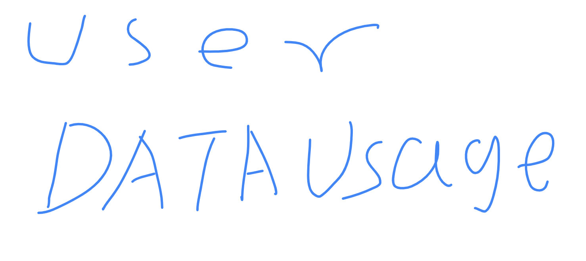

Help
How to connection to server
The start button located on the admin's dashboard page will directly start the connection. As a basic user,
you must ask the admin to start the server. All setting are already set by your admin.
The data usage graph shows your recent use of data

Why can't I join the server:
If you can't join the server, it's probably the server admin banned you from joining the server. You can ask your admin if he can remove you from being blocked.